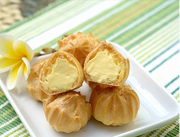

饭后小憩系列
sweet love

饭后小憩：曲奇 泡芙 蛋挞 牛角包
-

坚果曲奇
材料:花生去皮，黑芝麻，核桃仁，腰果，都弄成小碎块，大概小半碗，黑芝麻放入过筛两遍的低粉和奶粉混合物里，鸡蛋打散
-

泡芙
外壳材料：面粉60克、无盐黄油50克、水1/2杯、盐1/4小勺、砂糖1小勺、鸡蛋2个（L）；填充用奶油材料：面粉40克、砂糖50克、蛋黄4个、牛奶1杯、奶油香精数滴、鲜奶油1/2杯
-

蛋挞
材料:鸡蛋、白砂糖、牛奶还有蛋挞皮。做蛋挞时要注意白砂糖和牛奶的倒入比例，过多或者过少，做出来的蛋挞味道有比较大的出入。牛奶倒入鸡蛋之后，要注意对液体进行过筛，这样做出来的口感比较丝滑。过滤的时候发现杂质颗粒比较多，说明搅拌的时间不够，两者没有充分的融合，可以将过滤出来的液体倒回，重新搅拌不会造成浪费。